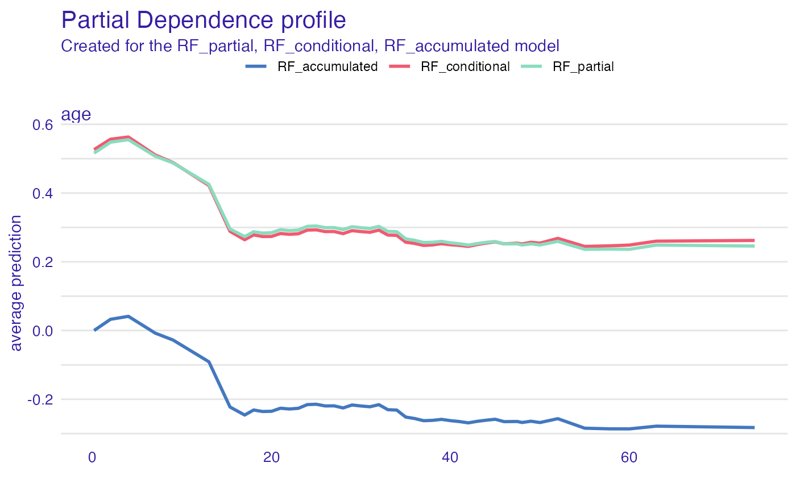
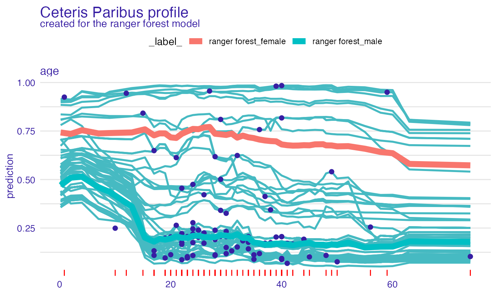
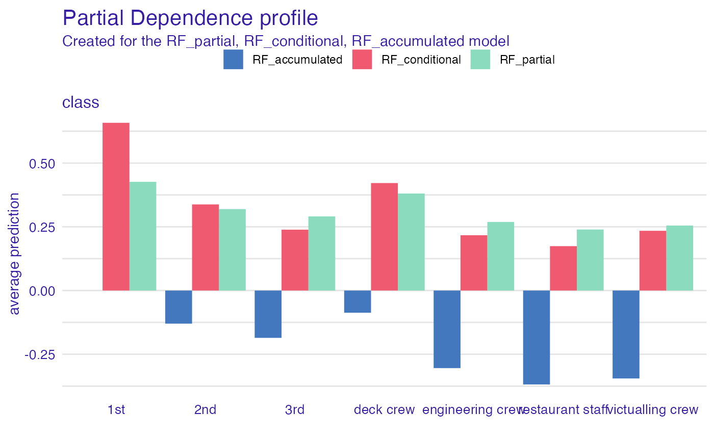
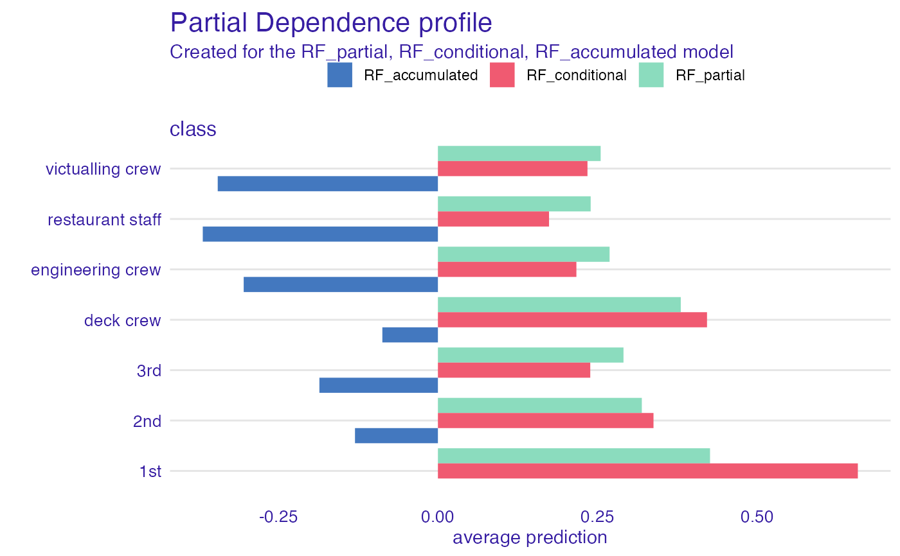
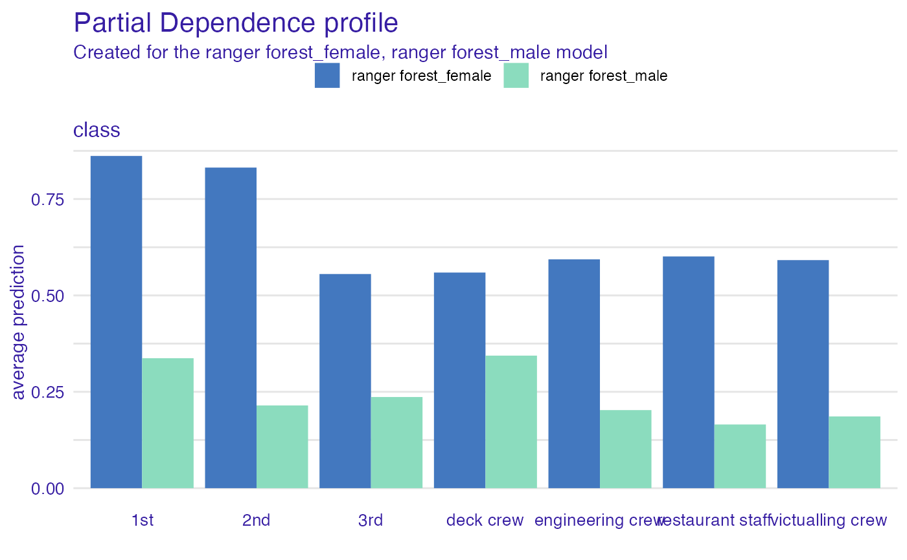
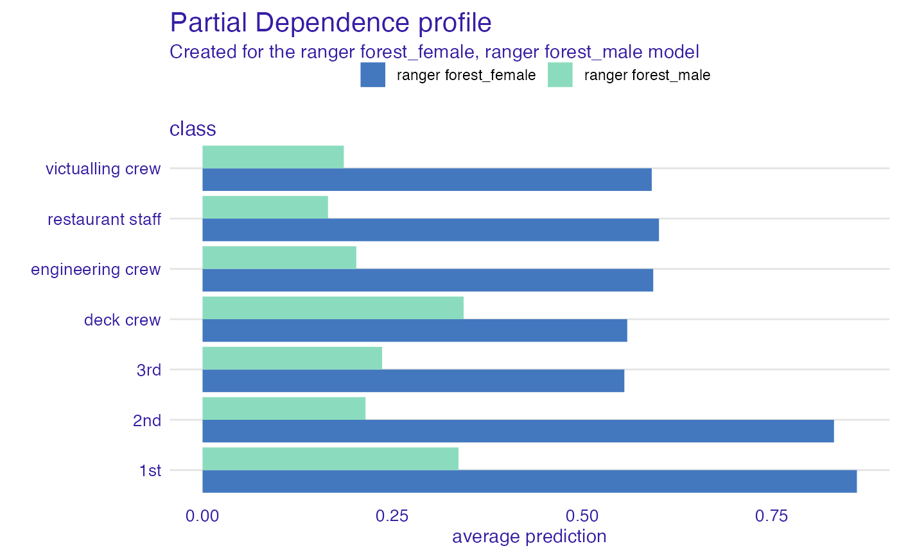

The function aggregate_profiles() calculates an aggregate of ceteris paribus profiles.
It can be: Partial Dependence Profile (average across Ceteris Paribus Profiles),
Conditional Dependence Profile (local weighted average across Ceteris Paribus Profiles) or
Accumulated Local Dependence Profile (cummulated average local changes in Ceteris Paribus Profiles).
aggregate_profiles( x, ..., variable_type = "numerical", groups = NULL, type = "partial", variables = NULL, span = 0.25, center = FALSE )
| x | a ceteris paribus explainer produced with function |
|---|---|
| ... | other explainers that shall be calculated together |
| variable_type | a character. If |
| groups | a variable name that will be used for grouping.
By default |
| type | either |
| variables | if not |
| span | smoothing coeffcient, by default 0.25.It's the sd for gaussian kernel |
| center | by default accumulated profiles start at 0. if |
an object of the class aggregated_profiles_explainer
Explanatory Model Analysis. Explore, Explain and Examine Predictive Models. https://pbiecek.github.io/ema
library("DALEX") library("randomForest") model_titanic_rf <- randomForest(survived ~ ., data = titanic_imputed)#> Warning: The response has five or fewer unique values. Are you sure you want to do regression?explain_titanic_rf <- explain(model_titanic_rf, data = titanic_imputed[,-8], y = titanic_imputed[,8])#> Preparation of a new explainer is initiated #> -> model label : randomForest ( default ) #> -> data : 2207 rows 7 cols #> -> target variable : 2207 values #> -> model_info : package randomForest , ver. 4.6.14 , task regression ( default ) #> -> predict function : yhat.randomForest will be used ( default ) #> -> predicted values : numerical, min = 0.012675 , mean = 0.3227524 , max = 0.992387 #> -> residual function : difference between y and yhat ( default ) #> -> residuals : numerical, min = -0.78385 , mean = -0.0005956617 , max = 0.9025297 #> A new explainer has been created!selected_passangers <- select_sample(titanic_imputed, n = 100) cp_rf <- ceteris_paribus(explain_titanic_rf, selected_passangers) head(cp_rf)#> Top profiles : #> gender age class embarked fare sibsp parch _yhat_ #> 515 female 45 2nd Southampton 10.1000 0 0 0.8653256 #> 515.1 male 45 2nd Southampton 10.1000 0 0 0.0965642 #> 604 female 17 3rd Southampton 7.1701 1 0 0.4729666 #> 604.1 male 17 3rd Southampton 7.1701 1 0 0.1096628 #> 1430 female 25 engineering crew Southampton 0.0000 0 0 0.6872168 #> 1430.1 male 25 engineering crew Southampton 0.0000 0 0 0.2416993 #> _vname_ _ids_ _label_ #> 515 gender 515 randomForest #> 515.1 gender 515 randomForest #> 604 gender 604 randomForest #> 604.1 gender 604 randomForest #> 1430 gender 1430 randomForest #> 1430.1 gender 1430 randomForest #> #> #> Top observations: #> gender age class embarked fare sibsp parch _yhat_ #> 515 male 45 2nd Southampton 10.1000 0 0 0.0965642 #> 604 male 17 3rd Southampton 7.1701 1 0 0.1096628 #> 1430 male 25 engineering crew Southampton 0.0000 0 0 0.2416993 #> 865 male 20 3rd Cherbourg 7.0406 0 0 0.1228617 #> 452 female 17 3rd Queenstown 7.1408 0 0 0.6316881 #> 1534 male 38 victualling crew Southampton 0.0000 0 0 0.1538204 #> _label_ _ids_ #> 515 randomForest 1 #> 604 randomForest 2 #> 1430 randomForest 3 #> 865 randomForest 4 #> 452 randomForest 5 #> 1534 randomForest 6# continouse variable pdp_rf_p <- aggregate_profiles(cp_rf, variables = "age", type = "partial") pdp_rf_p$`_label_` <- "RF_partial" pdp_rf_c <- aggregate_profiles(cp_rf, variables = "age", type = "conditional") pdp_rf_c$`_label_` <- "RF_conditional" pdp_rf_a <- aggregate_profiles(cp_rf, variables = "age", type = "accumulated") pdp_rf_a$`_label_` <- "RF_accumulated" plot(pdp_rf_p, pdp_rf_c, pdp_rf_a, color = "_label_")#> Top profiles : #> _vname_ _label_ _x_ _groups_ _yhat_ _ids_ #> 1 age randomForest_female 0.1666667 female 0.7434567 0 #> 2 age randomForest_female 2.0000000 female 0.7229214 0 #> 3 age randomForest_female 4.0000000 female 0.7473600 0 #> 4 age randomForest_female 7.0000000 female 0.7360306 0 #> 5 age randomForest_female 9.0000000 female 0.7414943 0 #> 6 age randomForest_female 13.0000000 female 0.7515555 0plot(cp_rf, variables = "age") + show_observations(cp_rf, variables = "age") + show_rugs(cp_rf, variables = "age", color = "red") + show_aggregated_profiles(pdp_rf, size = 3, color = "_label_")# categorical variable pdp_rf_p <- aggregate_profiles(cp_rf, variables = "class", variable_type = "categorical", type = "partial") pdp_rf_p$`_label_` <- "RF_partial" pdp_rf_c <- aggregate_profiles(cp_rf, variables = "class", variable_type = "categorical", type = "conditional") pdp_rf_c$`_label_` <- "RF_conditional" pdp_rf_a <- aggregate_profiles(cp_rf, variables = "class", variable_type = "categorical", type = "accumulated") pdp_rf_a$`_label_` <- "RF_accumulated" plot(pdp_rf_p, pdp_rf_c, pdp_rf_a, color = "_label_")#> #>#> #> #>pdp_rf <- aggregate_profiles(cp_rf, variables = "class", variable_type = "categorical", groups = "gender") head(pdp_rf)#> Top profiles : #> _vname_ _label_ _x_ _groups_ _yhat_ _ids_ #> 1 class randomForest_female 1st female 0.8459655 0 #> 8 class randomForest_male 1st male 0.3401782 0 #> 2 class randomForest_female 2nd female 0.8451342 0 #> 9 class randomForest_male 2nd male 0.1649419 0 #> 3 class randomForest_female 3rd female 0.5396670 0 #> 10 class randomForest_male 3rd male 0.1608068 0#> Warning: number of items to replace is not a multiple of replacement length#> Warning: number of items to replace is not a multiple of replacement length# }